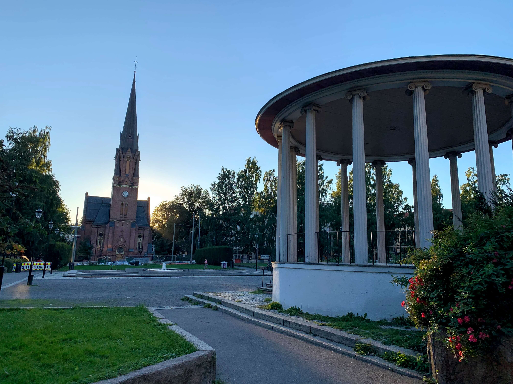

Kl 16:00
Paulus kirke
Thorvald Meyers gate 31
Oslo
Seremonien vil finne sted i Paulus kirke i Grünerløkka kl. 16:00. Ta på deg det fineste du har og møt opp i god tid. Vi anbefaler å benytte trikk 11, 12 eller 18 til Birkelunden holdeplass. Etter seremonien vil middag og festen fortsette i selskapslokalet Gamle Museet i Oslo sentrum. Brudeparet tar en liten omvei for bildetaking på veien.